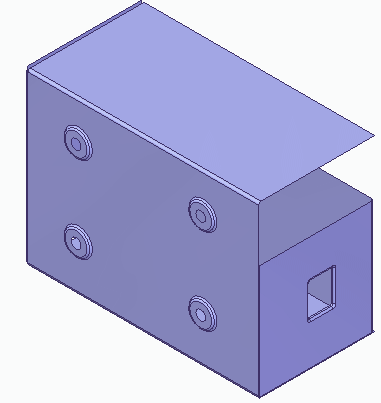
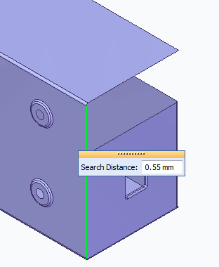
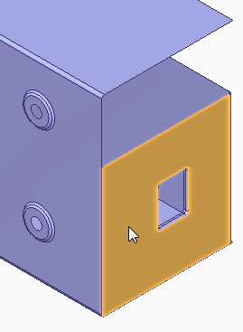
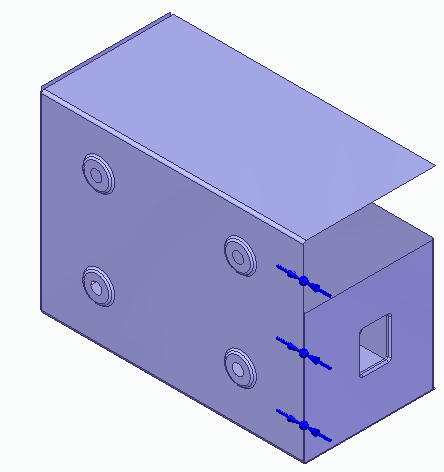
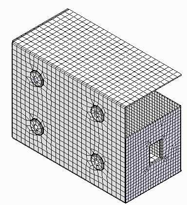
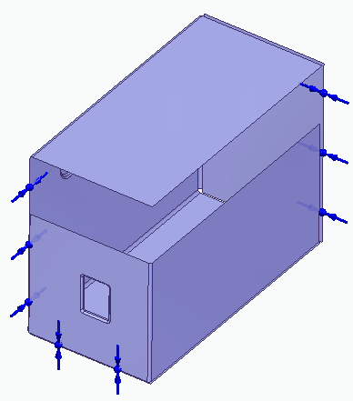
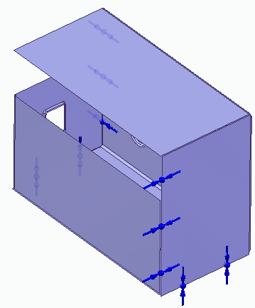

Tutorial: Apply edge connectors to an assembly
Learn how to use the Edge command  to apply edge connectors to a sheet metal assembly. The Edge connector simulates
the functionality of the Femap Closest Link command, using rigid elements that constrain all six degrees of freedom (DOF).
to apply edge connectors to a sheet metal assembly. The Edge connector simulates
the functionality of the Femap Closest Link command, using rigid elements that constrain all six degrees of freedom (DOF).
The Edge connector command works like the Manual connector command. It uses the Assembly Connector command bar to specify and create the connections, and you are prompted to select elements to connect from and elements to connect to.
The connections are generated automatically. Each node on the From edge is connected to the nearest node on the To edge, face, or surface.
-
When Connector Type=Rigid, you can create connections between two or more edges. You also can create a connection between an edge and a surface, or an edge and a face.
-
When Connector Type=Glue, you can enter a search distance and a penalty factor in the Assembly Connector Properties dialog box before you create connections by:
-
Selecting an edge and a face.
-
Selecting an edge and a surface.
Note:This differs from the Manual connector command (Connector Type=Glue), which creates connections between faces and surfaces.
-
-
Open an assembly model document with an existing study, FE_sheetmetal_edge.asm.
Simulation models are delivered in the \Program Files\Siemens\Solid Edge 2023\Training\Simulation folder.
The assembly consists of two parts represented by mid-surfaces.

-
Place an edge connector:
-
Select Simulation tab→Connectors group→Edge
. -
Ensure that Glue is selected in the Connector Type list.
-
Select the edge of the cover (the long edge) as the From edge, and type 0.55 mm in the Search Distance box.

-
Right-click to enter the value and continue.
-
Select the small face as the To surface and right-click to accept.

-
Click to finish placing the connector.

-
-
From the Simulation tab→Mesh group, select the Mesh command.

-
Click the Mesh button.
After a short period of time, the assembly is displayed with a surface mesh.

-
Continue using the Edge Connector command to apply edge connectors to the remaining free edges of the assembly.
Set the Search Distance to 4 mm for all remaining free edges.


-
Close this file.